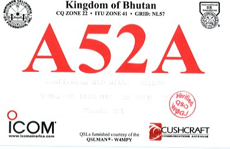

Flash ! DX
|
 


|
|
|
|

|
|
|
[Back Issues Nov.2015]
TIME:UTC(JST-09:00)
Report from JA1RJU(PM95sq)
30.Nov.2015(15:00ｂ)
Report from JA1RJU(PM95sq)
29.Nov.2015(15:00b)
Report from JA1RJU(PM95sq)
28.Nov.2015(15:00b)
Report from JA1RJU(PM95sq)
27.Nov.2015(15:00b)
Report from JA1RJU(PM95sq)
26.Nov.2015(15:00b)
Report from JA1RJU(PM95sq)
25.Nov.2015(15:00b)
Report from JA1RJU(PM95sq)
24.Nov.2015(15:00d)
VK6KXW 03:32 50.276.366 WSJT JT65a CQ -10dB(OF87)
VK6KXW 03:36 50.276.0 WSJT @ JT65a -08dB/-10dB 20W
VK6KXW 03:42 50.276.371 WSJT JT65a CQ -02dB
Report from JA1RJU(PM95sq)
23.Nov.2015(15:00b)
Report from JA1RJU(PM95sq)
22.Nov.2015(15:00d)
T88UA 07:26 50.117 SSB
T88UA 07:33 50.117 SSB @ RS59 (OP.JA2DST QSL via JH2DFJ)
T88DF 07:35 50.117 SSB CQ RS59 (OP & QSL JH2DFJ)
T88DF 08:00 50.117 SSB CQ RS59 QSB
(SP3RNZ 14:06 50.193 WSJT JT65a EME -26dB (JR6EXN))
(GW4WND 15:17 50.192 WSJT JT65a EME -21dB (JR6EXN))
(GW4WND 15:36 50.193 WSJT JT65a EME CQ (JR6EXN))
Report from JA1RJU(PM95sq)
21.Nov.2015(15:00e)
VK6** 07:01 50.110 SSB CQ weak & QRM
VK2FA 07:04 50.110 SSB
VK7DX 07:29 50.110 SSB weak
VK3FZ 07:30 50.276.010 WSJT JT65a CQ -10dB(QF22)
VK3FZ 07:32 50.276.0 WSJT @ JT65a -07dB/-10dB 25W
VK3FZ 07:42 50.276.0 WSJT JT65a CQ -10dB
VK3FZ 08:02 50.276.0 WSJT JT65a CQ -23dB
ZL4PW 08:06 50.103 CW CQ weak
Report from JA1RJU(PM95sq)
20.Nov.2015(15:00b)
Report from JA1RJU(PM95sq)
19.Nov.2015(15:00c)
(S57RR 12:25 50.193 WSJT JT65a EME CQ -24dB (JR6EXN))
Report from JA1RJU(PM95sq)
18.Nov.2015(15:00d)
V73SIX/B 03:20- 50.011.7 CW Beacon
ZL1NX 03:50 50.110 CW CQ
ZL1NX 03:53 50.110 CW CQ
ZL3NW 03:53 50.110 CW
ZL1AKW 03:56 50.110 SSB CQ QSY to 50.120MHz
ZL1AKW 03:57 50.120 SSB @ Dave RS57/57
ZL2OK 03:58 50.110 SSB @ David RS57/57
ZL1NX 04:02 50.110 CW CQ
ZL1AKW 04:03 50.110 SSB CQ
V73SIX/B 04:05- 50.011.7 CW Beacon (F.OUT 04:10)
Report from JA1RJU(PM95sq)
17.Nov.2015(15:00b)
Report from JA1RJU(PM95sq)
16.Nov.2015(15:00b)
Report from JA1RJU(PM95sq)
15.Nov.2015(15:00d)
V73SIX/B 03:00- 50.011.7 CW Beacon weak
V73SIX/B 03:50- 50.011.7 CW Beacon UP RST599 QSB
VK4BLK 04:36 50.276-0.460 WSJT JT65a CQ -08dB
VK4BLK 04:50 50.276-0.261 WSJT JT65a CQ -20dB
Report from JA1RJU(PM95sq)
14.Nov.2015(15:00b)
Report from JA1RJU(PM95sq)
13.Nov.2015(15:00b)
Report from JA1RJU(PM95sq)
12.Nov.2015(15:00d)
V73SIX/B 02:32- 50.011.7 CW Beacon QSB
VK4RSC/b 05:20- 50.285 CW Beacon
VK4AMG 05:25 50.110 CW CQ
Report from JA1RJU(PM95sq)
11.Nov.2015(15:00d)
V73SIX/B 03:39- 50.011.7 CW Beacon QSB
V73SIX/B 05:00- 50.011.7 CW Beacon
V73NS 05:03 50.105 CW CQ CQ
FK8IK 05:49 50.125 SSB
FK8DD/M 05:50 50.125 SSB CQ JA Sam
FK8SIX/B 05:53- 50.080 FSK Beacon
V73SIX/B 06:03- 50.011.7 CW Beacon RST599
Report from JA1RJU(PM95sq)
10.Nov.2015(15:00c)
V73SIX/B 05:00- 50.011.7 CW Beacon RST599
Report from JA1RJU(PM95sq)
09.Nov.2015(15:00c)
V73SIX/B 02:57- 50.011.7 CW Beacon RST599
(OH6MIK 05:51 50.195 WSJT JT65a EME QSO (JR6EXN))
Report from JA1RJU(PM95sq)
08.Nov.2015(15:00b)
Report from JA1RJU(PM95sq)
07.Nov.2015(15:00c)
V73SIX/B 03:00- 50.011.7 CW Beacon RST599
VK4UH 06:21 50.276.04 WSJT JT65a CQ -13dB
VK4UH 06:25 50.276.04 WSJT JT65a CQ -12dB
Report from JA1RJU(PM95sq)
06.Nov.2015(15:00c)
V73SIX/B 03:00- 50.011.7 CW Beacon
Report from JA1RJU(PM95sq)
05.Nov.2015(15:00f)
V73SIX/B 23:05- 50.011.7 CW Beacon RST579 QSB
VK2BXT 23:50 50.110 SSB
VK2BZE 23:50 50.110 SSB
VK2ZQ 23:53 50.115 SSB
ZL2WHO/B 23:53- 50.023.9 CW Beacon RST579
VK2HC 23:54 50.115 SSB
-------------------------------------------------------------------
VK2BZE 00:01 50.110 SSB CQ
V73SIX/B 00:30- 50.011.7 CW Beacon weak
ZL2WHO/B 00:49- 50.023.9 CW Beacon again
VK4AHW 03:40 50.110/125 SSB
VK4RSC/b 03:40- 50.285 CW Beacon
VK2YO 03:42 50.110 SSB CQ
VK2YO 03:51 50.110 SSB @ Nev RS59
VK4BOO 03:53 50.130 SSB
VK4EK 04:26 50.110 CW
VK4AHW 04:26 50.110 SSB
VK4QG 04:47 50.276-0.294 WSJT JT65a -15dB (QSO with JK1)
VK4QG 05:34 50.276-0.328 WSJT JT65a -06dB (QSO with JH4)
VK5PO 05:36 50.276-0.315 WSJT JT65a -11dB (QSO with JA5)
VK4QG 05:54 50.276-0.0135 WSJT JT65a -04dB (QSO with JA0)
VK4UH 06:25 50.276-0.035 WSJT JT65a CQ -06dB
VK8RAS/b 06:28- 50.044.7 CW Beacon
VK4AMG 06:37 50.100 CW RST599
VK4UH 06:53 50.276-0.038 WSJT JT65a CQ -08dB
KG6DX 08:09 50.103 CW CQ RST599++
KG6JDX 08:22 50.110 SSB RS59+ 100W
AH2G/B 08:28- 50.004.4 CW Beacon (KG6DX=QK23)
DU7/PA0HIP 08:48 50.105 CW RST599++
Report from JA1RJU(PM95sq)
04.Nov.2015(15:00d)
(LU5FF 22:39 50.110 CW into QM05)
(DJ9DX 23:23 50.198 WSJT JT65a EME QSO (JR6EXN))
-------------------------------------------------------------------
(ZL1AKW 03:47 50.110 CW into JA2/7)
(ZL2AO 04:10 50.120 SSB into QM05)
VK6KXW 05:49 50.276.452 WSJT JT65a CQ -11dB
VK6OX 06:01 50.276-0.253 WSJT JT65a CQ -13dB QF78
VK6KXW 06:06 50.276-0.452 WSJT JT65a CQ -10dB
VK6KXW 06:55 50.276.557 WSJT JT65a CQ -06dB
VK6KXW 07:10 50.276.213 WSJT JT65a -07dB (QSO with JA7)
VK6OX 07:39 50.276-0.275 WSJT JT65a -06dB (QSO with JR2)
VK6ZSB 07;44 50.276.124 WSJT JT65a -14dB (QSO with JA5)
T88ZE 08:23 50.130 SSB @ RS59 (ASL via JA4BXL)
DU1EV/B 08:25- 50.008 CW
DU7/PA0HIP 08:27 50.107 CW CQ RST599++
Report from JA1RJU(PM95sq)
03.Nov.2015(15:00e)
FK8CP 04:09 50.110 CW CQ
V73SIX/B 04:10- 50.011.7 CW Beacon weak
FK8IK 05:35 50.115 CW
FK8SIX/B 05:35- 50.080 FSK Beacon
V73SIX/B 05:36- 50.011.7 CW Beacon
FK8IK 05:48 50.115 CW
FK8DD/M 05:53 50.115 CW @ CQ UP1 RG87fs(QSL via NI5DX)
V73NS 05:58 50.105 CW CQ CQ
DU7/PA0HIP 06:55 50.110/105 CW CQ RST599
3W3MD/B 07:58- 50.095 CW Beacon "CQ DE 3W3MD/B QRZ"
3W3MD/B 08:20- 50.095 CW Beacon NO ANS !
HL/VK6JJJ 09:21 50.276.043 WSJT JT65a (QSO with JR2)
HL/VK6JJJ 09:31 50.276.040 WSJT JT65a CQ -10dB
Report from JA1RJU(PM95sq)
02.Nov.2015(15:00f)
ZL2WHO 03:20 50.110 SSB
ZL1AKW 03:25 50.110 SSB
FK8IK 03:53 50.115 CW
FK8SIX/b 03:53- 50.080 FSK
ZL2IK 03:58 50.110 SSB
ZL1AKW 04:00 50.130 SSB
V73SIX/B 04:05- 50.011.7 CW Beacon
ZL2WHO/B 04:10- 50.23.9 CW Beacon
ZL2WHO 04:21 50.120 SSB
DU7/PA0HIP 07:28 50.105 CW CQ RST599++
DU1EV/B 07:50- 50.008 CW Beacon RST599
DU1/JA3FJE 08:12 50.112 SSB RS59+
3W3MD 08:30 50.095 CW MDXC DX-Pedi (QSL via IK2VUC)
VK6DF 09:18 50.276-0.142 WSJT JT65a CQ -09dB OG89
VK6RSX/b 09:20- 50.304 CW Beacon
VK6HV 09:28 50.276-0.071 WSJT JT65a CQ -07dB
VK6DF 12:31 50.276 WSJT JT65a CQ -15dB
|
◎
3W3MD (Press Release # 3)
26 August 2015 // 2 Comments Great news from the Mediterraneo International Dx ClubTeam. During their already announced Da Nang city-Vietnam dxpedition with the call-sign: 3W3MD from October 31 to November 10 the international team leading by Antonio, IZ8CCW and [...]
3W3MD 50MHZ activity(26 October 2015 // 0 Comments) |
Report from JA1RJU(PM95sq)
01.Nov.2015(15:00f)
VK4CZ 03:14 50.276-0.038 WSJT JT65a CQ -04dB
VK4CZ 03:16 50.276-0.038 WSJT @ JT65a -07dB/-04dB QG62
VK4AHW 03:28 50.110 SSB CQ
FK8SIX/b 03:29- 50.080 FSK Beacon
FK8CP 03:33 50.110 CW CQ
VK4WM 03:36 50.110 SSB CQ
VK5RM 06:49 50.276.167 WSJT JT65a CQ -14dB
VK5RM 06:51 50.276-0.105 WSJT JT65a -11dB (QSO with JA3)
VK5XDX 07:06 50.105 CW CQ
VK6ZSB 07:27 50.276.450 WSJT JT65a -18dB (QSO with JA3)
VK6ZSB 07:35 50.276.5 WSJT JT65a -14dB (QSO with JA3)
VK6ZSB 07:42 50.276.5 WSJT @ JT65a -08dB/-14dB OF88
VK6HV 07:50 50.276-0.040 WSJT JT65a -05dB (Call to HL/VK6JJJ)
VK6DF 07:54 50.276 WSJT JT65a CQ -07dB OG89
VK6DF 07:56 50.276 WSJT JT65a -08dB (QSO with JA3)
VK6RSX/b 08:00- 50.304 CW Beacon
DU1EV/B 08:15- 50.008 CW Beacon
VK6HV 09:18 50.276 WSJT JT65a CQ -07dB
VK6RSX/b 09:20- 50.304 CW Beacon RST599
VK6HV 09:28 50.276 WSJT JT65a CQ -08dB
VK6DF 12:09 50.276 WSJT JT65a CQ -09dB OG8
VK6DF 12:14 50.276 WSJT JT65a CQ -14dB